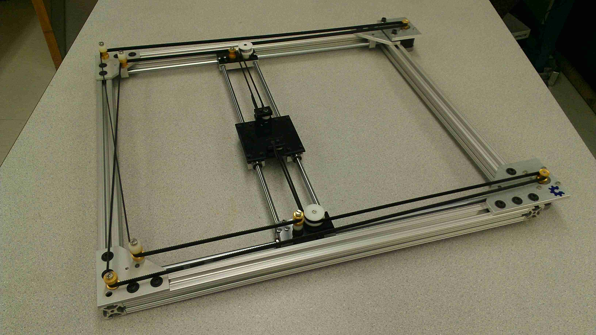
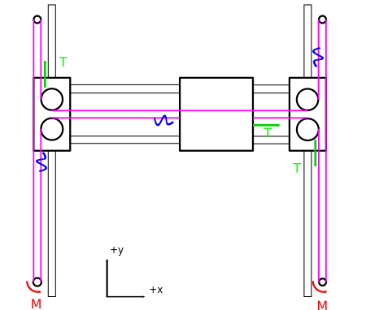
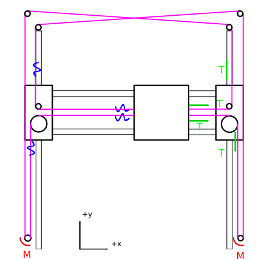
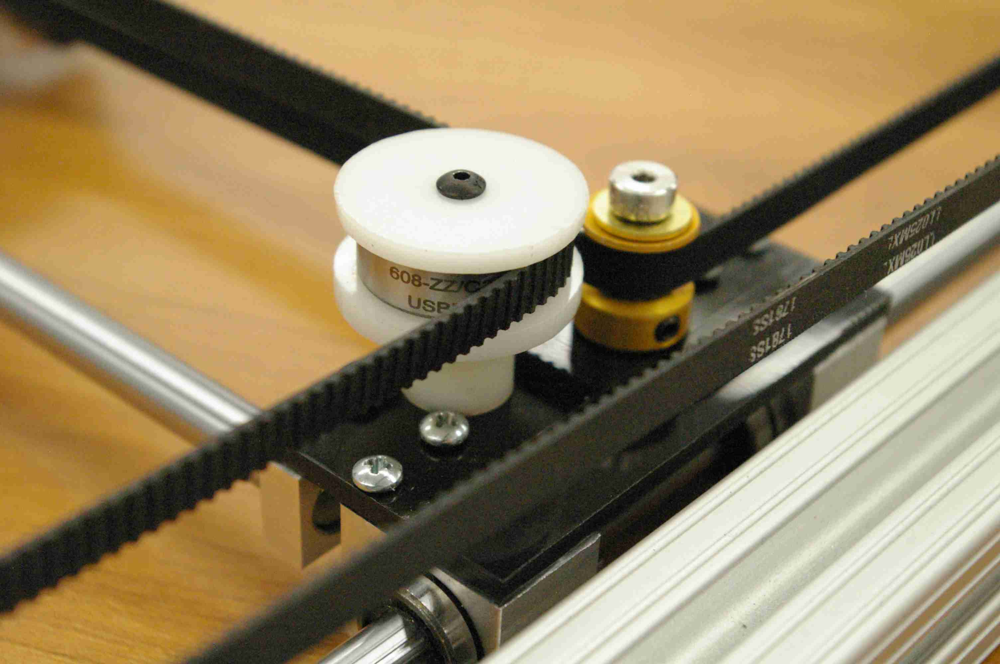
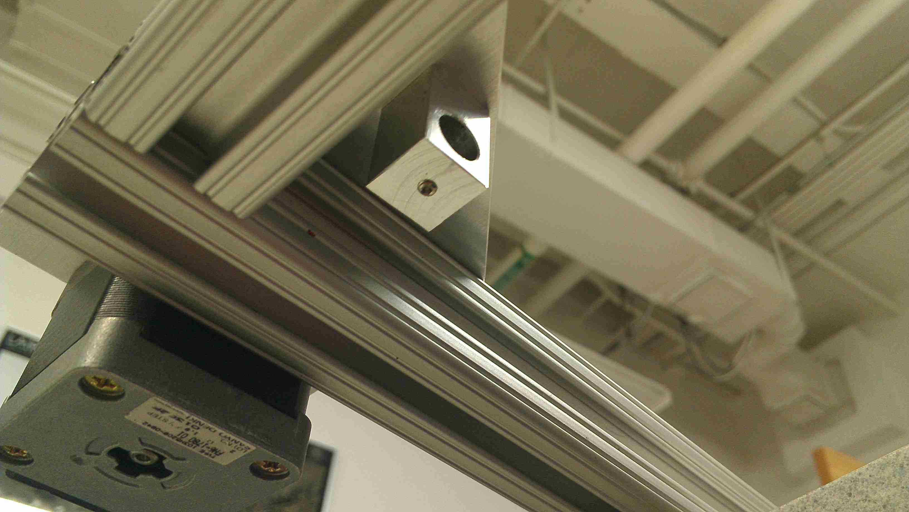
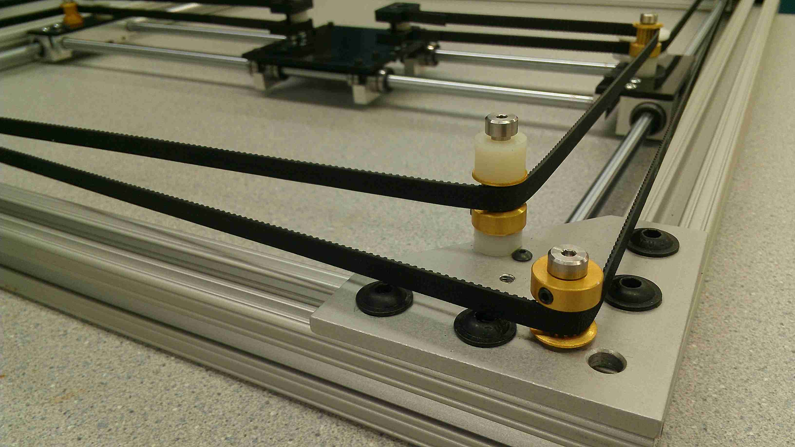

After machining an H-Bot, I discovered an inherent issue involved in moving the platform about a two-dimensional space. In what follows, I'll discuss the drawbacks of the H-bot design and then discuss how the Core-XY overcomes these drawbacks. I'll then finish up with my implementation. Lastly, feel free to email me for CAD models and more info.

Suppose we'd like to move the platform in the +x direction. To do so, we'd produce a torque M in each motor counterclockwise to produce the following forces on the platform. Since belts only exhibit a force in tension, I've drawn a squiggly arrow to represent a loose belt while a straight arrow represents a force T carried by a belt under tension. From an ideal physics standpoint, the y-vectors cancel, and the platform moves to the right in the +x direction.
However, this motion occurs under the assumption that the moving axis is perfectly rigid, an assumption that doesn't make sense in the real world. To see where we start to have issues, we need to take a close look at the net forces acting on the moving axis. Consider the following isolation diagram of just the moving axis below:
Taking the moving axis as a whole, we can see that the two belt tensions exhibit a net torque about the moving axis' center of mass. For this reason, Hbots that aren't purely rigid will exhibit a flex. Furthermore, this flex isn't just present in left-to-right motion, but in all linear combinations of motion. It just so happens that the net moment is maximized when the platform is moved purely left or right and zero when moved up and down.
If the tolerances are tight enough, this flex may be negligible; but in many high-end 3d printers and other precision motion systems, this flex can limit the quality of the parts produced. For a great example of this flex in action, take a look at the prototype shown here at 0:38.
The Core-XY happens to solve this net torque issue inherent to the H-bot. The Core-XY is a two-axis linear motion implementation developed at MIT Media Labs. The design itself is open source; nevertheless , at the time of writing, it has yet to spread around the 3d printer community as common design choice. Overall, it delivers the same benefit of the H-bot, a light moving platform, by keeping both motors fixed to the frame rather than mounting one motor on the moving axis. Furthermore, by crossing the belt, the unwanted torque vectors are eliminated. To see why, let's take a look at the force vectors again. Have a look below:

Now Suppose we exhibit a moment M in both motors, Once more, the platform moves in the +x direction as expected. Again, the force vectors in the y-direction cancel each other out as well. However, this time, no net torque is exhibited on the moving axis. For this reason, the moving axis does not twist in response to this motion.
It's a small change in belt pattern, but it leads to a world of difference in the real world. With a CoreXY design, an extremely rigid setup is no longer as critical a requirement as it was for an H-bot design. Here's a brief walkthrough of some of the key features in this low-cost implementation:

On the left, once again, budget pulleys are constructed from two discs of delrin sandwiching a conventional VXB ball bearing. By placing a washer between the bearing and the delrin discs, the bearing slides freely, guiding the pulley while maintaining belt tension. On the right, MXL pulleys guide the toothed end of the timing belt. Shoulder Screws hold them in place, lubricated with a silicone lubricant. Nylon spacers handle the non-coplanar offset of the second belt.

I chose set screws to secure the shafts to the 80\20 angle plates. These screws offer the benefit of later switching to a design with slightly different dimensions.

The Core-XY design relies on a non-coplanar belt path to drive the center platform. To handle the offset, the right motor, as well as its mating belt, are offset above the second belt. In this manner, both belts remain parallel to the plane about which the center platform moves. The plates are identical to those from the H-bot with a few extra holes drilled into them. Shoulder screws and silicone lubricant are responsible for the smooth motion. All parts involved in the belt drive were sourced from McMaster-Carr in this case.